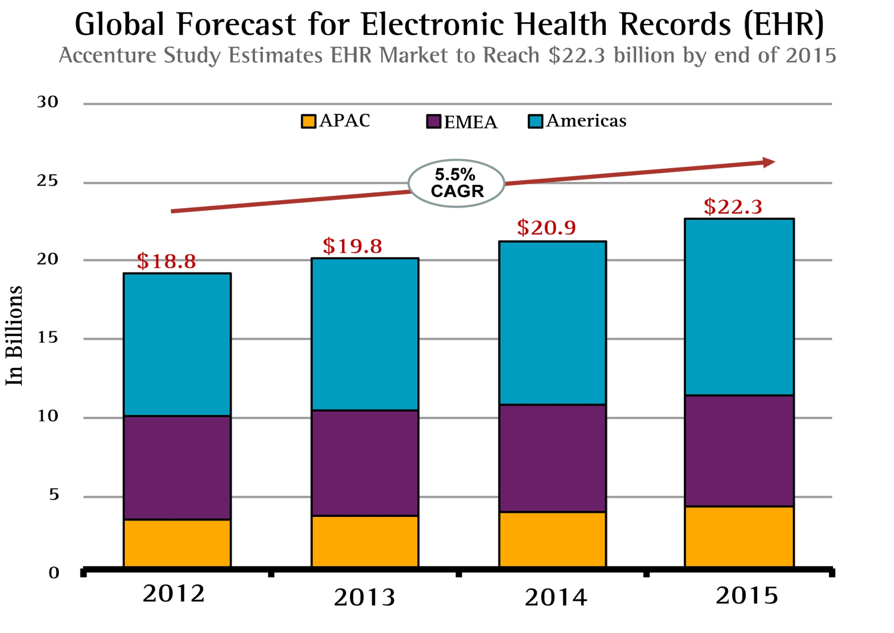

RESEARCH
Click the following buttons to jump to the corresponding sections below:
Structure of Research Background & Context Research Electronic Health RecordsNHS Summary Care Record NHS Pathways Frontend Technologies Backend Technologies
openEHR Integration APIs & Tools
Structure of Research
The research was split into three sections:
The first will introduce traditional Care Plans, what they are, why they are needed and what a care plan should generally include. It will also focus on Electronic Health Records (EHR), defining what they are, what they consist of, and their relevance to our project. This section will also explore examples of Electronic Health Records that are currently being used by the NHS in order to learn from them and apply gained knowledge to What’s The Plan.
The second and third sections will look at evaluating numerous frontend and backend technologies to identify suitable frameworks to develop our own Electronic Care Plan as a mobile app.
Background & Context Research
Care Plans
What is a Care Plan?
A care plan is a written document which sets out how a patient’s care and support needs will be met. The patient will be fully involved in the preparation of the care plan and anyone else who the patient requests should also get a written copy of the care plan.
Why is it needed?
There are various different kinds of care plans currently being used in the UK. The three main purposes of a care plan are as follows:
• To ensure that the patient gets the same care regardless of which members of staff are on duty.
• To ensure that the care given is recorded.
• To support the patient to identify, manage and, hopefully, solve his or her problems.
What should a care plan include?
• The needs identified by the assessment.
• Whether, and to what extent, the needs meet the eligibility criteria.
• The needs that the authority is going to meet, and how it intends to do so.
• For a person needing care, for which of the desired outcomes care and support could be relevant.
• For a carer, the outcomes the carer wishes to achieve, and their wishes around providing care, work, education and recreation where support could be relevant.
• The personal budget.
• Information and advice on what can be done to reduce the needs in question, and to prevent or delay the development of needs in the future.
Sources
http://www.nhs.uk/Conditions/social-care-and-support-guide/Pages/care-plans.aspxhttp://www.rncentral.com/nursing-library/careplans/
http://rcnhca.org.uk/46-2/care-plans-and-protocols/care-plans/
Electronic Health Records
What is an Electronic Health Record?
According to the Centres for Medicare and Medicaid Services the definition of an Electronic Health Record is an “electronic version of a patient’s medical history, that is maintained by the provider over time, and may include all of the key administrative clinical data relevant to that persons care under a particular provider.”
What can an Electronic Health Record include?
• Patient Demographics
• Diagnoses
• Treatment Plans
• Allergies
• Progress notes
• Medications
• Past medical history
• Immunizations
• Laboratory data
• Radiology reports
How popular are EHRs?
The effectiveness of Electronic Health Records in replacing paper based records has started the digitisation of healthcare which in turn has created a new market for the global healthcare industry. According to Transparency Market Research the global market for Electronic Health Records in 2013 was worth $15.56 billion, in 2014 it was $18.93 billion and predicted to reach more than $30 billion by 2023. It is expected to grow at a CAGR (Compound Annual Growth Rate) of 5.4% between 2015 and 2023.
Similarly, according to Accenture Research the global EHR market was estimated to grow at a CAGR of 5.5% between 2012 and 2015. Accenture further forecasts that the market will grow from $18.8 billion in 2012 to $22.3 billion in 2015.

Although both studies have differing valuations for the global EHR market, they both are similar in predicting a large future growth through a CAGR of higher than 5.4%. Government initiatives to encourage adoption of EHRs have aided massively in growing this market, however the lack of skilled IT professionals and high installation costs are some major factors that can have caused a slower growth of the market.
In the UK an example of this lies in the NHS’s Five Year Forward View, which sets out a new vision for the future of the NHS and its models of care. It describes “exploiting” the information revolution by utilising Electronic Health Records so that patient records are largely paperless. Patients should be granted full access to view them and be able to write to them.
Download NHS's Five Year Forward View
Why are Electronic Health Records relevant to our project?
According to our project specifications and requirements we can see that our project with the NHS is an attempt to implement an Electronic Care Plan so it will by default acquire the same manifesto as Electronic Health Records. Electronic Health Records are vague in description and definition since they can be used to perform many tasks in healthcare, our project will focus primarily on care-related features for the patient in the form of a mobile application.
Positives of implementing Electronic Care Plans:
• Improved information sharing between providers of healthcare due to better integration.
• Easier and quick availability of information for patients, therefore simplifying clinical decision making and improving their understanding.
• Reduces difficulty of receiving treatment in emergency situations due to stored medication and allergy data.
• Reduces healthcare costs and constraints for provider due to less paper-based workflows.
• Provides up to date and accurate information about patient.
• Reduces medical errors and provides safer healthcare.
• Improves communication between physicians and patients.
• Improves medical literacy of patients.
• Allows simpler and more reliable prescribing of medications.
Negatives of implementing Electronic Care Plans:
• Poor EHR design can lead to inefficient communication between physicians and patients due to a lack of confidence. Instead, they should be designed to improve the efficiency of engagement between patients and carers.
• Most are not designed primarily for patient use, and developing this with that in mind is a new obstacle.
• Inseparability from structure and content. This is bad because health practices and healthcare data change constantly meaning the EHR system must be adaptable otherwise a major redevelopment is required every time a change is realised.
• Data “lock-in” is a common hurdle for patients. This describes healthcare providers of EHRs making a customer dependent on their products and cost them a lot if they choose to switch to another. openEHR which is discussed later is one solution in stopping this.
Sources
https://www.england.nhs.uk/wp-content/uploads/2014/10/5yfv-web.pdfhttps://www.accenture.com/us-en/insight-getting-emr-back-fast-lane-summary
http://www.healthcareitnews.com/news/why-ehr-market-grow-2020
http://www.nuemd.com/news/2016/03/18/report-ehr-market-growth-still-rise
https://wire.ama-assn.org/practice-management/8-top-challenges-and-solutions-making-ehrs-usable
https://www.healthit.gov/providers-professionals/faqs/what-are-advantages-electronic-health-records
https://www.healthit.gov/providers-professionals/improved-care-coordination
https://www.cms.gov/Medicare/E-Health/EHealthRecords/index.html?redirect=/EhealthRecords/
https://www.healthit.gov/providers-professionals/faqs/what-electronic-health-record-ehr
NHS Summary Care Record
What is a Summary Care Record?
The Summary Care Record is an Electronic Record (EHR) that is formed from GP records on a particular patient. The data in the record can be accessed and edited by staff in other areas of health care who are involved in the patient’s care.
At minimum the record contains:
• Medications
• Allergy information
• Name, address, DOB and NHS number of the patient.
The patient can decide if they want to add information at will to the SCR about their care.
In the UK, the SCR is created automatically for each patient that is part of the NHS. The information is hosted on Spine, which is simply the infrastructure in England that connects all healthcare IT systems.
Why is it relevant and what is learned?
Both the SCR and What’s The Plan project aim to transition from paper based patient records to Electronic Health Records. The minimum information required on the SCR is some of the necessary information required to be stored in the What’s The Plan mobile app. The difference is that What’s The Plan aims to be used primarily by patients and thus requires a simple, clean and aesthetic user interface design while the SCR viewer is not very appealing. Furthermore, the data provided on the SCR is not responsive, it must be accessed through a website which can have problems being displayed on a smart phone. The What’s The Plan app attempts to solve this problem as well as deliver the same information.
Sources
https://digital.nhs.uk/scrhttps://digital.nhs.uk/spine
openEHR
What is openEHR and why is it useful?
openEHR is a community working on converting physical health data into an electronic form, it follows the same manifesto as Electronic Health Records (EHR). However, the main difference being that openEHR aims to ensure universal interoperability among all forms of healthcare data. This meaning that the EHR system must be “open” to work in conjunction with other health systems no matter how they differ, and be deployable in large scales.
openEHR allows back-end and front-end solutions to interface via standardised information models, content models, terminologies and service interfaces. This leads to users avoiding product and vender lock-in.
How does it work?
openEHR uses a multi-levelling, single source modelling approach within service-oriented software architecture.

The lowest level is the Reference Model, which is an information model that describes the logical structure of Electronic Health Records and demographic data. Any openEHR software must follow the structure enforced in this Reference Model.
The following level is Archetypes, which are a collection of data points/data groups which are independent of specific use. As a result of use-independent data points, there is no need for modelling the same data point more than once. The library of data points/data groups is navigable through the Clinical Knowledge Manager (CKM).
The next level are Templates, which are data-points and data groups (Archetypes) assembled into context-specific data sets. The data formed could for example be used for a particular message, a document, or a form. All openEHR software are built with templates which consist of the various relevant archetypes.
The highest level GUI, is the layer closest to the user, and also labelled as Template-Generated Artefacts. This can for example include application program interfaces and UI forms.
All specifications for each level are provided on the openEHR website.
What was learned?
In practice, systems integrating openEHR are “open” in terms of data, models and APIs. They share the adaptability due to archetypes being external to the openEHR system.
If What’s The Plan plans to use an open approach that allows universal interoperability and open integration of other health systems, the openEHR approach will be the most convenient method to solve this problem.
Sources
http://www.openehr.org/what_is_openehrhttp://www.openehr.org/releases/RM/latest/docs/index
http://www.openehr.org/ckm/
http://www.openehr.org/programs/clinicalmodels/documentation.php
http://www.slideshare.net/ianmcnicoll/uk-dose-syntax-and-medication-archetypes-apr-2015
NHS Pathways
What is Pathways?
Pathways is a Web Application that was designed to make it simpler for cancer patients to access information about their symptoms and treatments. This availability of information helped improve their decision making about future treatment options, and also helped them increase understanding of their medical conditions leading to reduced confusion about their care.
Clinicians at Guy’s and St Thomas’ Trust would give patients medical information in the form of photocopied handouts. The problem with this system, as the trust discovered, is that clinicians would sometimes not have the required documents on-hand, and even when they did, patients would very often misplace the handouts they received. As a result, the patients were not informed well enough which led to stress, confusion, and low satisfaction scores for the trust.
Pathways vs What's The Plan?
|
SIMILARITIES |
DIFFERENCES |
|
Both projects were initiated in UCL by the NHS. |
Pathways is a Web Application whereas What’s The Plan is a mobile application. |
|
Both projects attempt to transition from paper based workflows to electronic/digital forms. |
Pathways was created to be a communication tool between clinicians and patients, whereas What’s The Plan is simply designed just for the patient’s use. |
|
Pathways acts similarly to an EHR just like What’s The Plan aims to do. It stores patient records which can be accessed and edited. |
|
|
Both projects involve storing similar records for patients. This includes diagnoses, treatment plans, medications, and surgery information. |
|
NHS Pathways was built using the Ruby on Rails framework. However, this framework is not very effective for deploying mobile apps. It is possible to create a web app which can be disguised as an Android/iPhone app but this would lead to problems later which should instead be avoided.
Sources
http://students.cs.ucl.ac.uk/2014/group16/https://github.com/dranov/pathways
https://github.com/agamble/gstt-rails
Front End Technologies
Onsen
What is Onsen?
OnsenUI is a hybrid mobile front-end development framework which requires no set-up, making use of JavaScript, HTML and CSS.
The framework uses a robust command line tool and a desktop app which simplifies complicated tasks.
Advantages of Onsen:
• Allows switching between multiple frameworks: AngularJS, Angular 2, React, Vue.js and Meteor.
• Gives the developer the ability to produce an app using pure JavaScript - AngularJS is used under the hood but the developer does not need to learn AngularJS.
• Supports iOS and Android with the same source code.
• Provides different themes for the provided platforms.
Disadvantages of Onsen:
• Onsen has a smaller community than other frameworks - therefore less online support is provided.
• Onsen doesn’t look quite as nice as Ionic in terms of its default looks.
• The documentation and guides are lacking in general and there is a lack of full example code.
Ionic
Ionic, which is a robust HTML5 SDK, is a hybrid mobile development framework that allows developers to build mobile apps which feel native using CSS, HTML and JavaScript as web technologies, applications being built on AngularJS.
Advantages of Ionic:
• It is well optimized for touch devices.
• Ionic has a growing 3rd party plugin community - abundance of plugins such as date-time picker plugin can be used.
• In-built interaction with Cordova and Phonegap.
• Multiple app pre-made set-ups which help developers to create their work based on simple layouts.
• Easily integrated with native performance.
• It is based on AngularJS which consists of 'MVC patterns', 'data bindings' and 'dependency injections'.
Disadvantages of Ionic:
• Not completely native.
• Ionic currently does not support Windows Mobile platform.
• It is built only on Angular which implies that developers are required to use only a specific skillset instead of switching between multiple frameworks.
JQuery Mobile
JQuery Mobile is a cross platform mobile framework designed to simplify and and improve the advancement of mobile web applications by integrating jQuery, jQuery UI, HTML5, CSS3, into one framework that is not only robust, but maintainable and organised.
Advantages of JQuery Mobile:
• JQuery allows developers to perform a high amount of functions compared to other JavaScript libraries.
• Support is being offered to all HTML5 browsers.
• Abundance of 3rd party plugins and support.
• It is alot faster to build a mobile app using JQuery Mobile and HTML5 than natively in Android or IOS.
Disadvantages of JQuery Mobile:
• Lacks the MVC (Model-view-controller) architecture.
• Limitation of dependencies
Conclusion on Front End Research:
The most promising approach for the front-end is developing the app using the Ionic Framework because of it's various benefits and strengths over the other frameworks. It is well documented and produces the most native-like applications among the hybrid platforms. Furthermore, our team has previous experience with Ionic, HTML5 and AngularJS, so this will make the development process more efficient and high-quality since we are more familiar with the Ionic framework.
Sources:
• http://www.htmlgoodies.com/html5/tutorials/introduction-to-jquery-mobile.html#fbid=q08kvIFwSr-
• https://www.linkedin.com/pulse/advantages-disadvantages-using-ionic-framework-compared-pritam-bala
• https://www.airpair.com/javascript/posts/switching-from-ios-to-ionic
• https://onsen.io/ https://agingcoder.com/programming/2014/10/16/mobile-frameworks-onsenui/
• http://metadesignsolutions.com/ionic-framework-development-services/
• http://www.gajotres.net/ionic-vs-onsenui/
• http://www.gajotres.net/best-html5-mobile-app-frameworks-ionic-review/
• http://niallohiggins.com/2011/09/23/3-pros-cons-mobile-apps-with-jquery-mobile-and-html5/
• http://www.rapidprogramming.com/questions-answers/jquery-mobile-phonegap-differences-advantages-disadvantages-1574
• http://www.devx.com/wireless/pros-and-cons-of-5-mobile-ui-frameworks.html
Back End Technologies
Mobile Development Approaches
Research on Approaches
There are two trends occurring in the mobile development industry currently. The most common approach is the mobile-first approach strategy where a target market is chosen (IOS or Android) and a product is built for the native platform. Then a single version is pushed and the product is developed for other markets down the line.
The other trend is the API-first approach, in which the underlying construct - the API - is built first. This strategy allows the app to be built on different platforms. If your sole target audience is IOS users, perhaps a mobile-first strategy works better, but the downside is this slows down development for other target audiences in the future, including Windows, Android and a web-app for non-mobile users.
The API-first solution allows app developers to quickly reach users on many different devices. Using this strategy, you can build, deploy and manage the whole system lifecycle from one source using an API Backend as a Service (BaaS).
Conclusion on Approaches
For our project, we will be targeting as many users as possible, which means the app will be developed for both the IOS and Android platform, so the API-first approach is more suitable.
The following is research on various back end technologies (back end languages, frameworks and back end-as-a-service platforms) which are the potential building blocks of the API for the app.
Back End Programming Languages
PHP
What is PHP?
PHP stands for Hypertext Pre-processor and is the most popular scripting language on the web. PHP is a server-sided language which means PHP code does not get executed on the current local machine but rather on the computer/server from which the page is requested from.
Advantages of PHP:
• It is a free language with no licensing fees so the cost of using it is minimal.
• It can interact with many different database languages including MySQL.
• It is compatible with an Apache server which is also free to license and can also be run on many platforms including Windows, Linux and Unix servers.
• It is relatively fast since it uses much system resource.
• It has very good online documentation with a good framework of functions in place so it is relatively easy to learn and very well supported.
Disadvantages of PHP:
• Since PHP was designed to be used for web applications, it lacks direct support for developing the mobile application backend.
• Extra work is needed to set up the servers compared to backend-as-a-service platforms which require no setup.
• There are security bugs in PHP since it is open sourced so all people can see the source code and exploit the bugs and other weaknesses in the code.
• It is not suitable for large applications – it is hard to maintain since it is not very modular.
MySQL
What is MySQL?
MySQL is the world’s most popular open source relational database management system (RDMS). With its proven performance, reliability and ease of use, MySQL has become the leading database choice for web-based applications, used by high profile web applications such as Facebook and Twitter.
Advantages of MySQL:
• It is easy to use – compared to other relational database management systems, MySQL is very easy to install, and thanks to an abundance of third-party tools that can be added to the database, setting up an implementation is a relatively simple task.
• It is supported by a large community – support is readily available wherever necessary since MySQL is an open-source platform.
• MySQL is relatively cheap compared to other database options on the market.
• It is one of the most-used database systems in the world – it is compatible with most operating systems and is more or less an industry standard.
Disadvantages of MySQL:
• Stability issues – MySQL tends to be somewhat less reliable than its competitors. These stability issues are related to the way in which it handles certain functions.
• Performance Scaling issues – Although MySQL is equipped to handle a virtually limitless volume of data, it has a troubling tendency to stop working if it is forced to deal with too many operations at a given time. This relatively poor performance scaling means that apps which require high concurrency levels should look for alternatives.
• Heavily dependent on Add-ons – MySQL is relatively easy to set up but it tends to have less built-in functionality than many other database systems. Certain features including text search and ACID compliance are dependent on applications and add-ons.
Back End Frameworks
Ruby On Rails
What is Ruby On Rails?
RubyOnRails (Rails) is a web application framework written in Ruby. Rails combines the Ruby programming language with HTML, CSS, and Javascript to create a web application that runs on a web server. Because it runs on a web server, Rails is considered a server-side or back-end framework.
Advantages of Ruby On Rails:
• Clean, elegant and easy to read – since Rails is written in Ruby which is a programming language designed to be a joy to use thanks to its readability and elegance, the code written is relatively cleaner and easier to read.
• Community – because Rails is an open-source framework (meaning the source code is available to the general public) it has a large and helpful community of programmers that can always help new developers.
• Fast development – Rails is good for rapid application development (RAD), as the framework makes it easy to accommodate changes.
• Emphasis on RESTful application design – REST (Representational State Transfer) is a style of software architecture which encourages a logical structure within applications which means they can easily be exposed as an API. This makes it suitable as the back-end for a CRUD (create read update delete) mobile application.
• Free of cost – RubyOnRails is free to use by anyone for any use both personal and commercial.
• Allows a high level of interaction – RubyOnRails is highly suitable for websites that require a lot of content input, storage and management, for instance creating a CMS (content management system) would be suitable in Rails.
• Test automation – Rails has developed a strong focus on automated testing and has a range of good testing frameworks such as RSpec.
Disadvantages of Ruby On Rails:
• Not all web hosts can support Rails – this is primarily because it can be more resource intensive than PHP, a fact which puts off low-end shared-hosting providers. This means it will be more difficult to find a web host for a Rails application.
• PHP and Java are more widely used than Rails and there are more developers in these languages.
• Performance and scalability issues – Rails applications are not as fast as Java or C.
• Rails has many features which would not be necessary to use for a mobile app back-end, which is the case for our current situation, for instance views, layouts, sessions and views helper will all be redundant.
Back End As A Service (BAAS) Platforms
Firebase
What is Firebase?
Firebase is a powerful, real-time, scalable backend as a service platform currently being maintained by Google. Firebase has various mixes of services including NoSQL data storage, real-time database, data analytics, cloud messaging, and user authentication, all packaged into a single SDK (software development kit).
Advantages of Firebase:
• Various services are all provided under a single SDK.
• It provides a real-time database which lets you synchronize data and store it in the Firebase cloud and allows all clients to be in sync in real-time.
• No need for server-side code since Firebase handles everything for you
• Relatively simple and easy to use
• It handles user authentication through a simplified login process so there is no need to implement your own server code for authenticating users.
• Storage reliability and scalability – data is stored by Firebase is supported by Google Cloud which is safe and reliable and can offer almost an endless storage space.
• Testing and debugging is made simple using Test Lab and Crash Reporting features of Firebase.
• Files are secured easily – the security model for the storage SDK is similar to the security that the real-time database offers so it’s extremely easy to secure files against actual users.
• It can easily be integrated with Ionic front-end framework using AngularFire – an AngularJS binding for Firebase.
Disadvantages of Firebase:
• If your app handles complex data operations, it may need its own API which means you would have to write your own server code to connect with Firebase.
• Lots of client-sided code to interact with Firebase (server logic is running in the mobile or web client) which makes it tedious to maintain.
• Expensive – Firebase pricing plans can get very expensive if the basic limits are exceeded.
• Since Firebase uses a NoSQL system, handling relations between entities can be very tedious to do.
• You do not own your data – it is not possible to export your user’s data (you can’t export emails, and user accounts are not recoverable). In order to do this, you need to directly contact the Firebase Team, which is a tedious procedure.
• Migrations are not an easy tasks since the storage format is different to SQL (Firebase uses NoSQL/JSON).
Conclusions on Back End Technologies
The research on the various back end technologies have helped us develop a clearer understanding of the possible tools that can be used to build the API for our mobile app. Each language, framework and service has various strengths and weaknesses but based on the requirements and scope of our project, Firebase has an edge over the other alternatives.
Sources:
• http://nordicapis.com/why-you-should-build-apps-with-an-api-backend-baas/
• http://tutorialzine.com/2015/12/the-languages-and-frameworks-you-should-learn-in-2016/
• http://www.homeandlearn.co.uk/php/php1p1.html
• https://www.upwork.com/hiring/development/server-side-scripting-back-end-web-development-technology/
• https://www.oracle.com/mysql/index.html
• https://www.datarealm.com/blog/five-advantages-disadvantages-of-mysql/
• http://railsapps.github.io/what-is-ruby-rails.html
• https://www.toptal.com/ruby-on-rails/after-two-decades-of-programming-i-use-rails
• https://bitzesty.com/2014/03/03/ruby-on-rails-what-it-is-and-why-we-use-it-for-web-applications/
• https://firebase.google.com/
• https://scotch.io/bar-talk/a-look-at-the-new-firebase-a-powerful-google-platform
• https://crisp.im/blog/why-you-should-never-use-firebase-realtime-database/
openEHR Integration APIs & Tools
EhrScape RESTful APIs
openEHR acts as an open specification for the information model of Electronic Health Records. However, it does not itself produce the open Electronic Health Care applications and software. As a result of the complexity provided by the openEHR Specification, an application developer would have to interact with an openEHR System and its information model using a set of "service APIs". EhrScape acts as the interface to the openEHR Clinical Data Repository and provides several service APIs to allow the building of open healthcare applications.
EhrScape is a RESTful API which means it uses HTTP requests like GET, PUT, POST and DELETE to store, retrieve and query data.
EhrScape provides various service APIs such as Terminology APIs, Eletronic Health Record APIs, Clinical Decision Support APIs, and Resource Store APIs. However, as we are creating an EHR based mobile application, we are only interested in Electronic Health Record APIs.

Postman
Postman is a GUI Platform that aims to speed up API development through testing and documentation. In the context of What's The Plan, it is the perfect tool to test and experiment with EhrScape API calls outside of the application context.

The sources below provide the bulk of tutorials and documentation for EhrScape API services and Postman, which we read to get a better grasp of how to implement openEHR concepts in our app.
Sources:
• https://www.ehrscape.com/api-explorer.html
• https://code4health.org/platform/open_interfaces_apis/ehrscape
• https://code4health.org/platform/open_interfaces_apis/ehrscape/introduction
• https://code4health.org/platform/open_interfaces_apis/ehrscape/using_postman_with_ehrscape